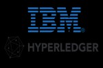
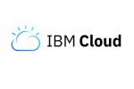
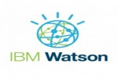
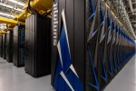
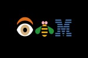
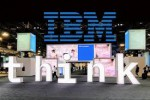

IBM Wiki
International Business Machines Corporation (IBM) is an American multinational information technology company headquartered in Armonk, New York, with operations in over 170 countries. The company began in 1911, founded in Endicott, New York, as the Computing-Tabulating-Recording Company (CTR) and was renamed "International Business Machines" in 1924.
IBM produces and sells computer hardware, middleware and software, and provides hosting and consulting services in areas ranging from mainframe computers to nanotechnology. IBM is also a major research organization, holding the record for most U.S. patents generated by a business (as of 2019) for 26 consecutive years.[5] Inventions by IBM include the automated teller machine (ATM), the floppy disk, the hard disk drive, the magnetic stripe card, the relational database, the SQL programming language, the UPC barcode, and dynamic random-access memory (DRAM). The IBM mainframe, exemplified by the System/360, was the dominant computing platform during the 1960s and 1970s.
IBM produces and sells computer hardware, middleware and software, and provides hosting and consulting services in areas ranging from mainframe computers to nanotechnology. IBM is also a major research organization, holding the record for most U.S. patents generated by a business (as of 2019) for 26 consecutive years.
IBM has continually shifted business operations by focusing on higher-value, more profitable markets. This includes spinning off printer manufacturer Lexmark in 1991 and the sale of personal computer (ThinkPad/ThinkCentre) and x86-based server businesses to Lenovo (in 2005 and 2014, respectively).
Nicknamed Big Blue, IBM is one of 30 companies included in the Dow Jones Industrial Average and one of the world's largest employers, with (as of 2017) over 380,000 employees, known as "IBMers". At least 70% of IBMers are based outside the United States, and the country with the largest number of IBMers is India.
HEADQUARTERS
IBM is headquartered in Armonk, New York, a community 37 miles (60 km) north of Midtown Manhattan.[58] Its principal building, referred to as CHQ, is a 283,000-square-foot (26,300 m2) glass and stone edifice on a 25-acre (10 ha) parcel amid a 432-acre former apple orchard the company purchased in the mid-1950s.[59] There are two other IBM buildings within walking distance of CHQ: the North Castle office, which previously served as IBM's headquarters; and the Louis V. Gerstner, Jr., Center for Learning[60] (formerly known as IBM Learning Center (ILC)), a resort hotel and training center, which has 182 guest rooms, 31 meeting rooms, and various amenities.[61]
IBM operates in 174 countries as of 2016, with mobility centers in smaller markets areas and major campuses in the larger ones. In New York City, IBM has several offices besides CHQ, including the IBM Watson headquarters at Astor Place in Manhattan. Outside of New York, major campuses in the United States include Austin, Texas; Research Triangle Park (Raleigh-Durham), North Carolina; Rochester, Minnesota; and Silicon Valley, California.
IBM India Private Limited is the Indian subsidiary of IBM, which is headquartered at Bengaluru, Karnataka. It has facilities in Bengaluru, Ahmedabad, Delhi, Kolkata, Mumbai, Chennai, Pune, Gurugram, Noida, Bhubaneshwar, Coimbatore, Visakhapatnam and Hyderabad.
PRODUCTS & SERVICES
IBM has a large and diverse portfolio of products and services. As of 2016, these offerings fall into the categories of cloud computing, Artificial intelligence, commerce, data and analytics, Internet of Things (IoT),[70] IT infrastructure, mobile, and security.[71]
IBM Cloud includes infrastructure as a service (IaaS), software as a service (SaaS) and platform as a service (PaaS) offered through public, private and hybrid cloud delivery models.
Hardware designed by IBM for these categories include IBM's POWER microprocessors, which are employed inside many console gaming systems, including Xbox 360,[75] PlayStation 3, and Nintendo's Wii U.[76][77] IBM Secure Blue is encryption hardware that can be built into microprocessors,[78] and in 2014, the company revealed TrueNorth, a neuromorphic CMOS integrated circuit and announced a $3 billion investment over the following five years to design a neural chip that mimics the human brain, with 10 billion neurons and 100 trillion synapses.
IT outsourcing also represents a major service provided by IBM, with more than 40 data centers worldwide.[81] alphaWorks is IBM's source for emerging software technologies, and SPSS is a software package used for statistical analysis. IBM's Kenexa suite provides employment and retention solutions, and includes the BrassRing, an applicant tracking system used by thousands of companies for recruiting.[82] IBM also owns The Weather Company, which provides weather forecasting and includes weather.com and Weather Underground.





